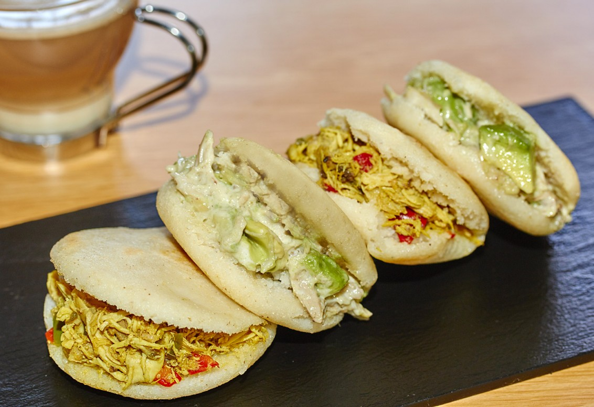
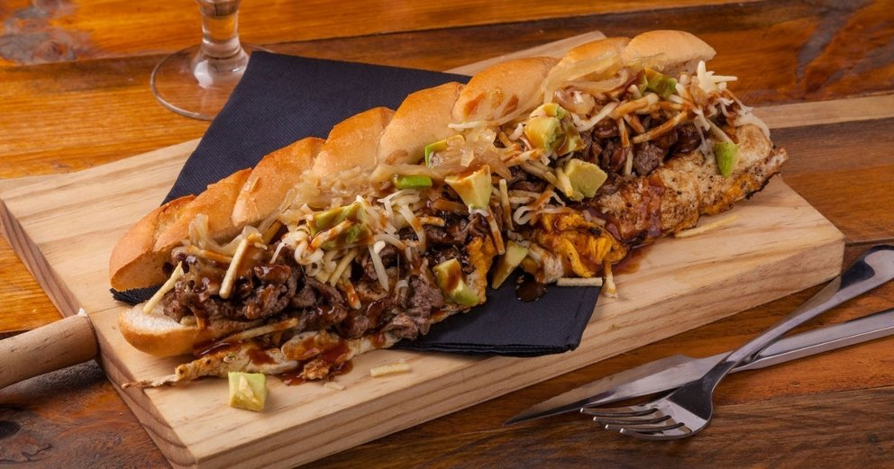
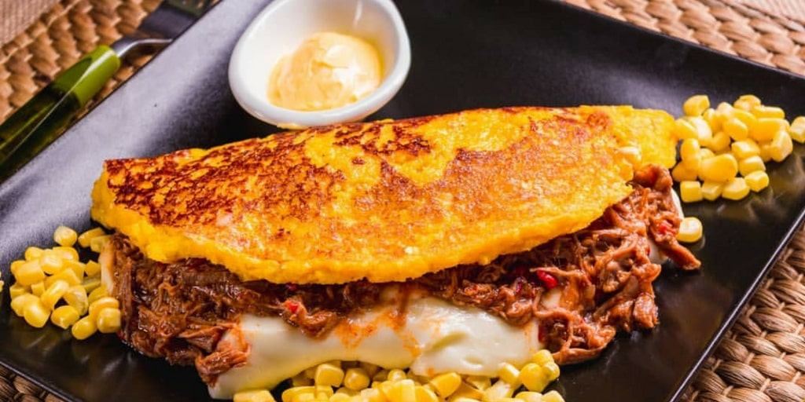
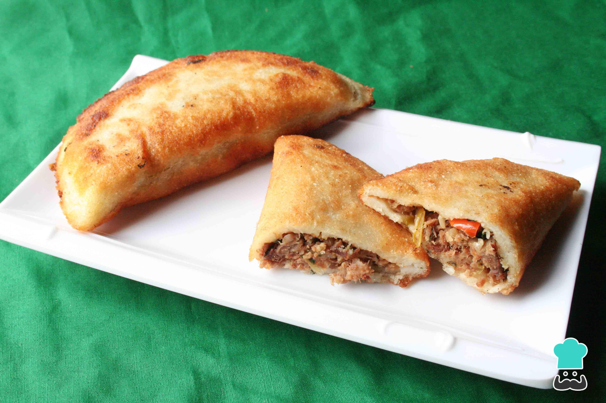

| imagen |
comida |
ingredientes |
region |
variantes |
|  |
arepa |
harina de maiz, agua y sal |
toda Venezuela |
en unas zonas del pais las arepas son mas grandes, pero mas delgadas y en otras son mas gruesas pero mas pequeñas |
 |
pabellon |
arroz, caraotas, carne mechada, tajadas, huevo |
toda venezuela |
en el llano la carne mechada puede ser cambiada por carne de cualquier otro animal, y en la zona oriental le colocan azucar a las caraotas |
|  |
pepito |
pan, carne de res, pollo cerdo, papas fritas, salsas vegetales |
venezuela |
los mejores pepitos son los del estado lara, que tienen mejor calidad al momento de elegir las carnes, los panes y demas ingredientes. a diferencia de los de la capital que no le dan tanta importancia a los ingredientes y mientras que en lara le colocan mas carne, en la capital los hacen on mas vegetales, son practicamente unos vegetarianos y no saben tan bien como los del estado lara, por eso se dice que el estado lara es la capital del pepito |
|  |
cachapa |
maiz molido agua, sal y aceite |
en toda Venezuela |
aqui si no varia mucho, debido a la gran variedad de ingredientes con los que se pueden rellenar las cachapas, puede ser desde un simple queso, hasta carne de cerdo, salsas pollo y cualquier cosa que se te pueda ocurrir |
|  |
empanadas |
harina de maiz, aceite y el relleno a eleccion |
toda venezuela, en especial las playas y puestos informales en autopistas muy concurridas o de viaje |
aqui si el relleno de las empanadas depende netamente de la zona donde te encuentres, en las costas y las playas es mas comun conseguirlas de animales marinos, como sardina, atun, cazon. hasta de pabellon (que es carne, caraotas, tajadass queso) un echo curioso que es importante resaltar, las empanadas echas en casa nunca saben igual a las que venden en la calle, siempre las de la cale tiene un sabor muy por encima al que uno puede elaborar en casa y aparte del relleno que elijas para tus empanadas, les puedes poner salsas a tu gusto, como puede ser una de queso, de tocineta, de ajo y hasta picante. No hay ninguna limitacion |